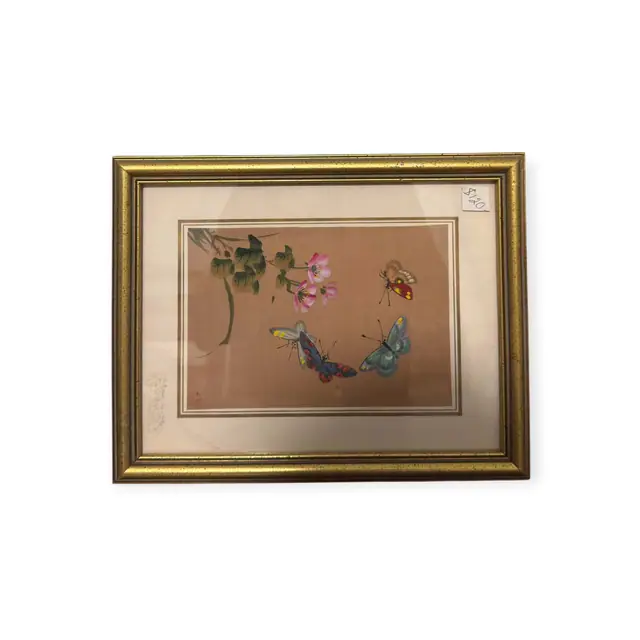
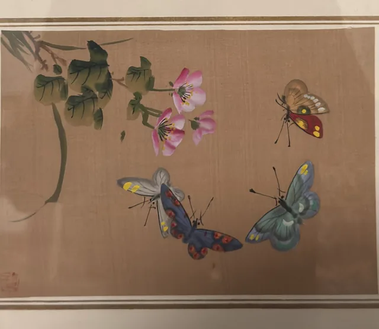
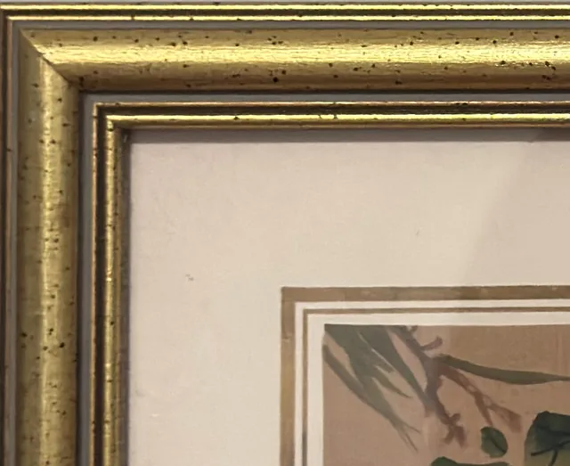
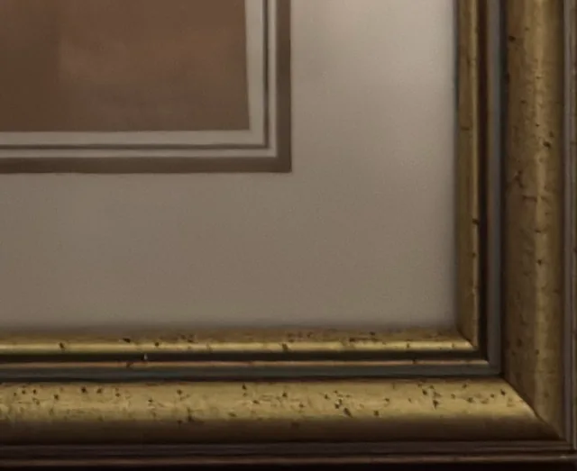
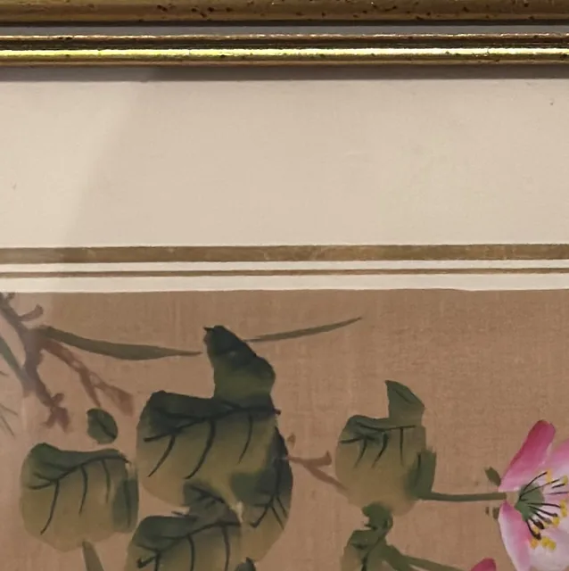
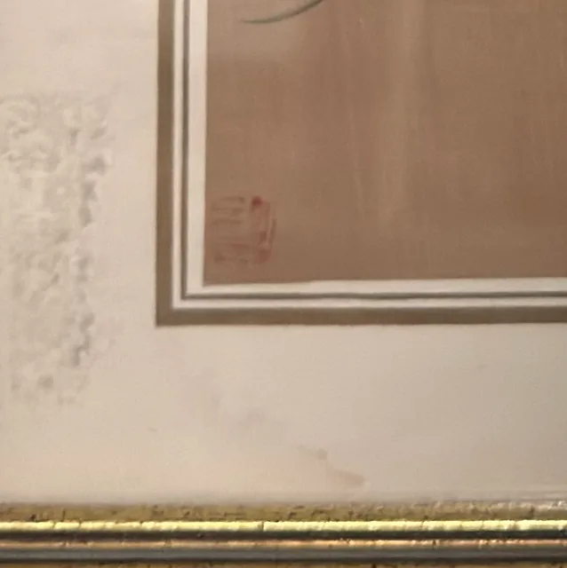
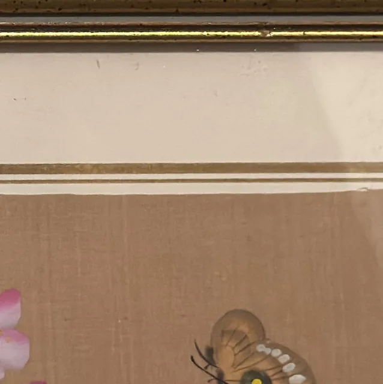
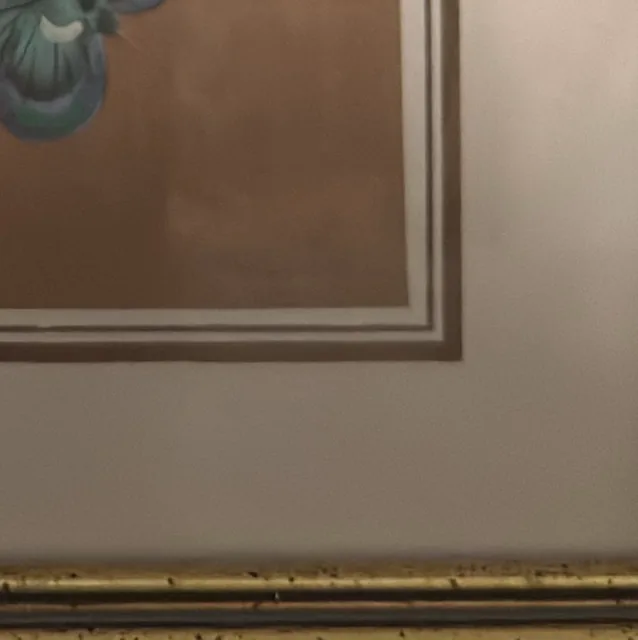

Paintings & Prints
Chinese Butterflies and Pink Blossoms on Silk, Signed, Framed
· 20th century
Price Upon Request








About the Item
A delicate export-style painting on a warm tan silk ground: a slender stem of green rounded leaves enters from the upper left and carries two pink blossoms, while three butterflies hover below and to the right. Each butterfly is picked out with fine hair-thin antennae and jewel-like wings in cobalt, turquoise, scarlet, gold and black. The handling is meticulous and miniature in scale, the silk left bare across most of the surface so the insects float in empty space. It is double-matted in cream with a fine gold-brown inner line and set in a narrow gilt frame under glass. Medium: gouache and ink on silk. Signed small red seal at the lower left of the silk. Inscribed on the reverse or mount: $40 (handwritten price sticker on the mat, upper right). Condition: Silk is toned but even; some faint pencil marks and light soiling on the mat at lower left; strong glare on the glass. Small adhesive price sticker still attached to the mat.
Details
- Creation Year:
- 20th century
- Dimensions:
- Height: 9.0 in (22.86 cm)
Width: 11.0 in (27.94 cm)
outside of frame - Medium:
- gouache and ink on silk
- Period:
- 20Th
- Condition:
- Offered in the condition shown in the photographs.
- Reference Number:
- VO-144
- Documentation:
- no certificate photographed
- Gallery Location:
- $40 (handwritten price sticker on the mat, upper right)